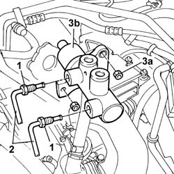
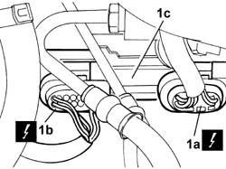
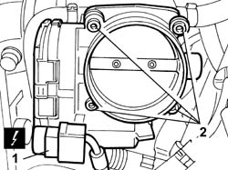
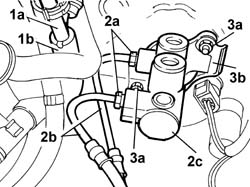
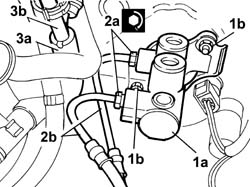
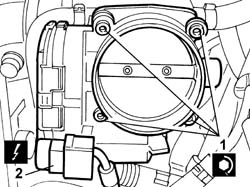

3330C10 MASTER CYLINDER (PUMP) - R.R. - Bleed air from brakes separately
- Path
- Procedures > 33 BRAKES > 3330 HYDRAULIC BRAKING SYSTEM > 3330C BRAKE PUMP, RESERVOIR AND LOAD PROPORTIONING VALVE > 3330C10 MASTER CYLINDER (PUMP) - R.R. - Bleed air from brakes separately
- Kind
- repair procedure (removal / refitting; the operation number is the code)
- Applies to
- all engines; all production periods
- Interactive page
- https://sloeber94.github.io/elrnDB-lThss/en/#/155805
Applies to: engines: 2.0 TB, 2.4 20V, 2.4 JTD 10V, 2.4 JTD 20V; all production periods
 Removing
Removing
 Refitting
Refitting- Position the vehicle on a lift.
See in Op. 7040D50 ENGINE COMPARTMENT UPPER SOUND INSULATION SHIELD - R.R.
Applies to: engines: 2.4 20V; all production periods
Applies to: engines: 2.0 TB; all production periods
See in Op. 1048A50 air inlet pipe to turbocharger - r + r
-
See in Op. 1048A21 AIR INLET HOSE FROM INTAKE TO FILTER - R.R.
Applies to: engines: 2.4 JTD 20V; all production periods
See in Op. 1016A10 SOUND-PROOFING COVER - R.R.
See in Op. 1048B44 RIGID air supply PIPE from heat exchanger to intake manifold - R.R.
Applies to: engines: 2.4 JTD 10V; all production periods
See in Op. 1048A48 HOSE BETWEEN RESONATOR AND THROTTLE CASING - R.R.
Applies to: engines: 2.0 TB, 2.4 20V, 2.4 JTD 10V, 2.4 JTD 20V; all production periods
See in Op. 3340A12 A.B.S. hydraulic and electronic CONTROL UNIT - R.R. - Includes bleeding air
1. Undo the connectors for the rigid pipes on the brake pump.
2. Remove the two rigid pipes connected to the hydraulic and electronic control units.
3. Undo the fixing nuts (3a) and remove the brake pump (3b).

Applies to: engines: 2.0 TB, 2.4 20V, 2.4 JTD 10V, 2.4 JTD 20V; all production periods
Refitting
Removing- Fit the rigid pipe connecting the brake pump and the A.B.S. electro-hydraulic control unit.
- Tighten the connector on the brake pump to torque.
 | Value - daNm | Fastening | Component | Ø |
|---|---|---|---|---|
. | 1.4 | Connector | FRONT BRAKE RIGID PIPE FROM MASTER CYLINDER | M12 |
Applies to: engines: 2.0 TB, 2.4 20V, 2.4 JTD 10V, 2.4 JTD 20V; all production periods
See in Op. 3340A12 A.B.S. hydraulic and electronic CONTROL UNIT - R.R. - Includes bleeding air
-
Applies to: engines: 2.0 TB; all production periods
See in Op. 1048A21 AIR INLET HOSE FROM INTAKE TO FILTER - R.R.
See in Op. 1048A50 air inlet pipe to turbocharger - r + r
-
Applies to: engines: 2.4 JTD 20V; all production periods
See in Op. 1048A50 air inlet pipe to turbocharger - r + r
See in Op. 1048B44 RIGID air supply PIPE from heat exchanger to intake manifold - R.R.
Applies to: engines: 2.4 JTD 10V; all production periods
See in Op. 1048A48 HOSE BETWEEN RESONATOR AND THROTTLE CASING - R.R.
Applies to: engines: 2.4 20V; all production periods
Applies to: engines: 2.0 TB, 2.4 20V, 2.4 JTD 10V, 2.4 JTD 20V; all production periods
See in Op. 0010T64 Brake and/or clutch fluid - Check level and top up, if necessary
-
See in Op. 0010T65 HYDRAULIC BRAKING SYSTEM - BLEED AIR
-
See in Op. 7040D50 ENGINE COMPARTMENT UPPER SOUND INSULATION SHIELD - R.R.
- Remove the vehicle from the lift.
Applies to: engines: 3.0 V6, 3.2 V6; all production periods
Removing
Refitting- Open the boot, remove the cover on the left hand side and disconnect the negative battery lead.
See in Op. 1048A21 AIR INLET HOSE FROM INTAKE TO FILTER - R.R.
See in Op. 1048A28 vacuum air circuit resonator pipe - r+r
1. Disconnect the connectors (1a) and (1b) for the braking system check control unit (1c) and remove the actual control unit.
 | Description | Connector |
|---|---|---|
1a | Braking system check control unit (NBA brake assistance) | M052 |
| Description | Connector |
|---|---|---|
1b | Braking system check control unit (NBA brake assistance) | M052 |

Applies to: engines: 3.0 V6, 3.2 V6; all production periods
1. Disconnect the electrical connection for the throttle casing.
| Description | Connector |
|---|---|---|
1 | Integrated throttle casing actuator | N075 |
2. Undo the fixing bolts and remove the throttle casing

Applies to: engines: 3.0 V6, 3.2 V6; all production periods
- Position a suitable container for collecting the brake fluid
See in Op. 3330C30 brake fluid reservoir - r + r and wash inside
1. Disconnect the vacuum increase valve (1a) from the lower pipes (1b) to the brake servo and the intake hose.
2. Undo the connectors (2a) for the rigid pipes (2b) between the brake pump (2c) and the ABS control unit and remove them.
3. Undo the two nuts (3a) fixing the master cylinder and the braking system check control unit mounting bracket (3b) and remove the master cylinder.

Applies to: engines: 3.0 V6, 3.2 V6; all production periods
Refitting
Removing- Check the conditions of the seals on the master cylinder and, if necessary, replace them.
1. Position the master cylinder (1a) and tighten the fixing nuts (1b).
2. Position the rigid pipes (2b) between the ABS control unit and the brake pump tightening the connectors (2a) to the recommended torque.
| Value - daNm | Fastening | Component | Ø |
|---|---|---|---|---|
2a | 1.4 | Connector | PIPE FROM PUMP TO HYDRAULIC CONTROL UNIT | M10 |
3. Connect the lower pipes (3a) for the vacuum increase valve (3b).

Applies to: engines: 3.0 V6, 3.2 V6; all production periods
See in Op. 3330C30 brake fluid reservoir - r + r and wash inside
1. Position the throttle casing and tighten the fixing bolts.
| Value - daNm | Fastening | Component | Ø |
|---|---|---|---|---|
1 | 9 | Bolt | BUTTERFLY VALVE CASE/S (MPI) | M6 |
2. Connect the electrical connection for the throttle casing.
| Description | Connector |
|---|---|---|
2 | Integrated throttle casing actuator | N075 |

Applies to: engines: 3.0 V6, 3.2 V6; all production periods
1. Position the braking system check control unit (1c) and connect the connectors (1a) and (1b) for the control unit.
| Description | Connector |
|---|---|---|
1a | Braking system check control unit (NBA brake assistance) | M052 |
| Description | Connector |
|---|---|---|
1b | Braking system check control unit (NBA brake assistance) | M052 |
Applies to: engines: 3.0 V6, 3.2 V6; all production periods
See in Op. 1048A28 vacuum air circuit resonator pipe - r+r
See in Op. 1048A21 AIR INLET HOSE FROM INTAKE TO FILTER - R.R.
See in Op. 0010T64 Brake and/or clutch fluid - Check level and top up, if necessary
- [PR0010T64]
- Connect the negative battery terminal and position the cover on the left hand side of the luggage compartment.
Topics linked from this page (12)
- 0010T64 Brake and/or clutch fluid - Check level and top up, if necessary
- 0010T65 HYDRAULIC BRAKING SYSTEM - BLEED AIR
- 1016A10 SOUND-PROOFING COVER - R.R.
- 1048A50 air inlet pipe to turbocharger - r + r
- 1048B44 RIGID air supply PIPE from heat exchanger to intake manifold - R.R.
- 1048A21 AIR INLET HOSE FROM INTAKE TO FILTER - R.R.
- 1048A28 vacuum air circuit resonator pipe - r+r
- 1048A50 air inlet pipe to turbocharger - r + r
- 1048A48 HOSE BETWEEN RESONATOR AND THROTTLE CASING - R.R.
- 3330C30 brake fluid reservoir - r + r and wash inside
- 3340A12 A.B.S. hydraulic and electronic CONTROL UNIT - R.R. - Includes bleeding air
- 7040D50 ENGINE COMPARTMENT UPPER SOUND INSULATION SHIELD - R.R.